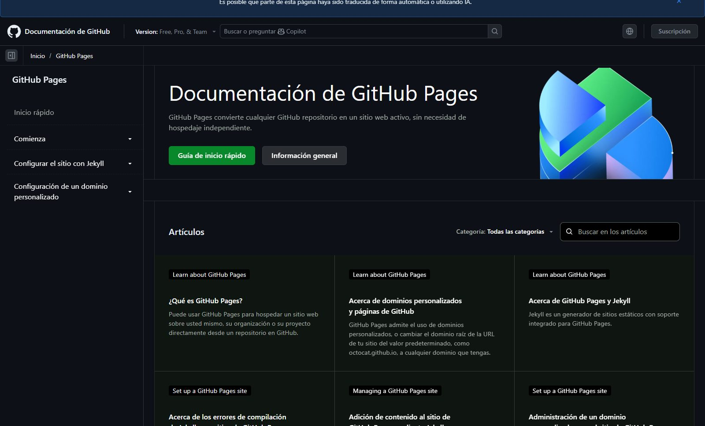
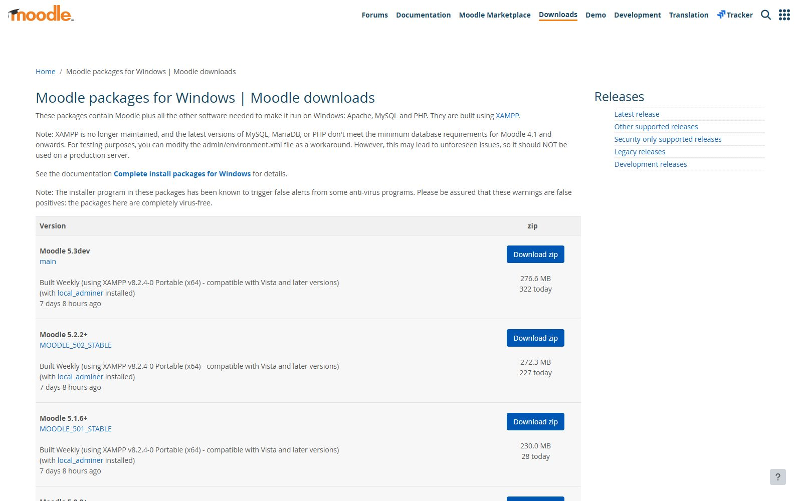

Unidad 2
Contenidos de la unidad
Cada bloque de teoría va seguido de una sesión de práctica en el ordenador. Al final de la unidad tendrás una web publicada.
- 01Cómo funciona una página web: navegador, servidor y archivos
- 02Estructura de un documento HTML
- 03Texto, enlaces, imágenes, listas y tablas
- 04CSS: selectores, colores y tipografía
- 05Maquetación con Flexbox y Grid
- 06Publicar la web en GitHub Pages
Lenguajes de marcas utilizados en la web
Qué vas a saber hacer
Escribir una página HTML correcta desde cero
Con su estructura, títulos, párrafos, enlaces, imágenes, listas y tablas.
Darle estilo con CSS
Colores, tipografía, espacios y una maquetación que se adapte al móvil.
Publicarla y comprobarla en el navegador
Subirla a GitHub Pages y revisarla con las herramientas de desarrollo.
2.2 HTML
Un documento HTML es texto con etiquetas
HTML (HyperText Markup Language) es el lenguaje con el que se escribe el contenido de una página web. Las etiquetas dicen qué es cada cosa: un título, un párrafo, un enlace o una imagen.
- —Se escribe en un archivo de texto con extensión
.html - —Cada etiqueta va entre
<y>, y casi todas se cierran - —El navegador lee el archivo y dibuja la página

Figura 2.1. La referencia de HTML en MDN Web Docs. Haz clic en la imagen para verla en grande.
2.6 Publicar
Publicar tu web en GitHub Pages
Crea el repositorio
Público, con el nombre de tu web.
Sube los archivos
index.html, el CSS y la carpeta de imágenes.
Activa Pages
En Settings, apartado Pages, elige la rama main.
Espera al despliegue
Uno o dos minutos. GitHub te muestra la dirección.
Compruébala
Abre usuario.github.io/repositorio en el móvil y en el ordenador.
2.3 Etiquetas
Las etiquetas que más vas a usar
Tabla 2.1. Elaboración propia a partir de la referencia de elementos HTML de MDN Web Docs, consultada el 10 de septiembre de 2026.
2.4 CSS
HTML frente a CSS
HTML: contenido y estructura
- ●Dice qué hay en la página: títulos, párrafos, enlaces, imágenes
- ●Se escribe con etiquetas entre < y >
- ●Sin CSS se ve, pero en blanco y negro y todo seguido
CSS: aspecto y colocación
- ●Dice cómo se ve: colores, tipografía, tamaños, espacios y columnas
- ●Se escribe con reglas:
selector { propiedad: valor; } - ●Sin HTML no hay nada a lo que dar estilo
2.2 Estructura
Tu primera página
Todo documento HTML tiene la misma estructura. En <head> va lo que el navegador necesita saber; en <body>, lo que se ve.
Las líneas marcadas son el contenido visible: un título, un párrafo y un enlace.
<!DOCTYPE html> <html lang="es"> <head> <meta charset="utf-8"> <title>Móviles Ya</title> <link rel="stylesheet" href="estilo.css"> </head> <body> <h1>Móviles Ya</h1> <p>Reparamos pantallas en el día.</p> <a href="contacto.html">Pide cita</a> </body> </html>
2.4 CSS
Una regla CSS cambia el aspecto
<!DOCTYPE html>
<html lang="es">
<head>
<meta charset="utf-8">
<style>
body { font-family: sans-serif; padding: 32px; }
h1 { color: #041c3f; }
.lema { color: #0a6e1a; font-size: 1.4em; }
.boton { background: #fe8f46; color: #fff;
padding: 12px 24px; border-radius: 10px;
text-decoration: none; }
</style>
</head>
<body>
<h1>Móviles Ya</h1>
<p class="lema">Reparación en el día</p>
<a class="boton" href="#">Pide cita</a>
</body>
</html>
2.4 CSS
La misma página, sin CSS y con CSS

Solo HTML. El navegador aplica sus estilos por defecto: Times, negro sobre blanco, todo en una columna.

HTML y CSS. Mismo archivo HTML más una hoja de estilos de diez reglas: cabecera, colores, tipografía y un botón.
2.1 Herramientas
Tres webs que vas a visitar mucho
Pulsa cada una para ver su captura.
MDN Web Docs
La referencia de HTML, CSS y JavaScript que usan los profesionales. En español.
Documentación de GitHub Pages
Cómo publicar una web estática gratis desde un repositorio.
Descargas de Moodle para Windows
El paquete todo en uno con el que instalaremos Moodle en local.


Vídeo 2.1. Vídeo de muestra. Sustituir por el enlace de inserción del vídeo (YouTube, Vimeo o archivo propio).
2.1 Vídeo
Qué pasa cuando escribes una dirección en el navegador
Fíjate en quién pide la página, quién la envía y qué archivos viajan. Al terminar lo dibujamos en la pizarra.
- —Duración: 6 min
- —Ver hasta el minuto 4:30

Pregunta a la clase
¿Qué aplicaciones web usas cada día sin pensar que lo son?
Pista: si se abre en el navegador y guarda tus cosas en internet, es una aplicación web.
Ideas
- ●El correo: Gmail u Outlook en el navegador, sin instalar nada.
- ●Classroom y Moodle: las tareas y las notas del instituto.
- ●Documentos compartidos: Google Docs, Canva, un formulario.
- ●La web del instituto: casi seguro que está hecha con un gestor de contenidos.
Pregunta a la clase
¿Cómo era la primera página web de la historia?

1991
Solo texto y enlaces, sin imágenes ni colores. La escribió Tim Berners-Lee en el CERN y sigue en línea en la misma dirección.
40 %
De todos los sitios web del mundo están hechos con WordPress
Un gestor de contenidos permite crear y mantener una web sin escribir el HTML a mano. WordPress es, con mucha diferencia, el más usado.
58,8 %
De los sitios con gestor de contenidos usan WordPress
2003
Año de la primera versión de WordPress
Fuentes: W3Techs, estadísticas de uso de WordPress (40,3 % de todos los sitios web), y wordpress.org, historia del proyecto. Consultados el 10 de septiembre de 2026.
Tu primera página: la web de un negocio
Elige un negocio pequeño (una tienda de reparación de móviles, una peluquería, un bar) y escribe su página de inicio en HTML: nombre, qué ofrece, horario y forma de contacto. Sin CSS todavía.
Duración
1 sesión (2 h)
Modalidad
Individual, en el aula
Entrega
index.html en Classroom
Material
Visual Studio Code y navegador. Sin IA
- 1.Crea la carpeta del proyecto y el archivo index.html con la estructura básica
- 2.Añade un título, dos párrafos, una lista de servicios y un enlace de contacto
- 3.Ábrelo en el navegador, corrige lo que no se vea bien y súbelo a Classroom
Ejercicios interactivos
Cada ejercicio genera un caso al azar. Comprobar corrige, Pista ayuda, Resolver muestra la solución y Otro ejercicio cambia de caso. Cuenta los aciertos seguidos.
Se insertan con <div class="ej" data-tipo="…">.
Tipos propuestos · pendientes de acordar
- completarEscribir la etiqueta o la propiedad que falta en un fragmento
- errorEncontrar el error en un fragmento de HTML o CSS y decir cuál es
- ordenarPoner en orden los pasos de una instalación (WordPress, Moodle)
- emparejarUnir cada etiqueta o propiedad con su función
- selectorElegir el selector CSS que afecta al elemento marcado

HTML y CSS se aprenden escribiéndolos a mano
La inteligencia artificial no se usa en clase salvo que se indique expresamente. Cuando se permita, se dice en el enunciado de la práctica y se entrega también el prompt.
Unidad 2
Resumen de la unidad
Una página web es un archivo de texto con etiquetas HTML que el navegador dibuja.
HTML pone el contenido y la estructura; CSS, el aspecto y la colocación.
Una regla CSS es un selector, una propiedad y un valor; Flexbox y Grid colocan las cajas.
Publicar en GitHub Pages es gratis: un repositorio, los archivos y un minuto de espera.
Para ampliar
Recursos y documentación
- HTMLMDN Web Docs, referencia de HTML en español. developer.mozilla.org/es/docs/Web/HTML. Consultado el 10 de septiembre de 2026.
- CSSMDN Web Docs, referencia de CSS en español. developer.mozilla.org/es/docs/Web/CSS. Consultado el 10 de septiembre de 2026.
- PublicarDocumentación de GitHub Pages. docs.github.com/es/pages. Consultado el 10 de septiembre de 2026.
- NormativaCurrículo del ciclo de Sistemas Microinformáticos y Redes en Castilla y León, módulo 0228. BOCyL n.º 173, 9 de septiembre de 2009.
Identidad visual
Paleta de Aplicaciones Web
títulos, texto, fondo oscuro
subtítulos
reserva
vector gris, paneles
líneas
fondo
vector verde, píldoras, acierto
verde para texto
punto, guiones, etiquetas de código
rótulos, números, botones, enlaces
avisos, cadenas de código
semáforo, errores
Plus Jakarta Sans para todo el texto y JetBrains Mono para el código: <a href="https://">